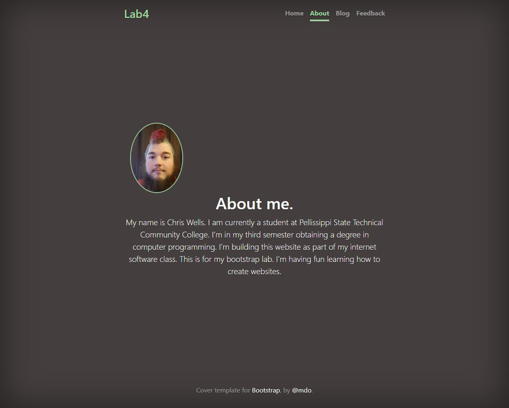

Coursework
Bootstrap Cover Page
An earlier portfolio About page preserved from an internet software course.
Overview
A legacy About page built from the Bootstrap cover example for an internet software class. It preserves an earlier biography, portrait, and template attribution.


Key features
- Bootstrap cover layout and responsive utilities.
- Profile image and original student biography.
- Original template attribution and navigation.
How it works
The page adapts Bootstrap’s cover example with a portrait and a student biography. It is retained as an earlier coursework artifact; the biography is historical rather than a current profile.
Project notes
This historical page is retained at its existing URL. Its biography describes the time when it was created.